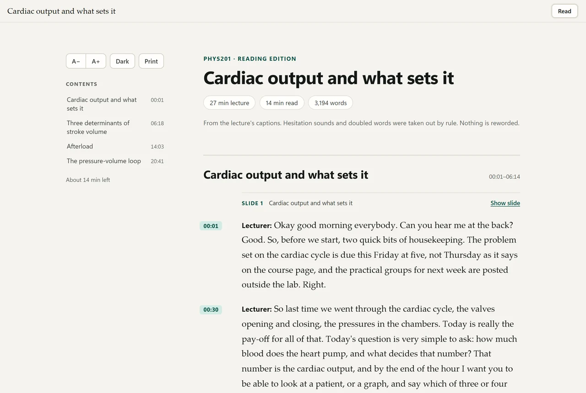
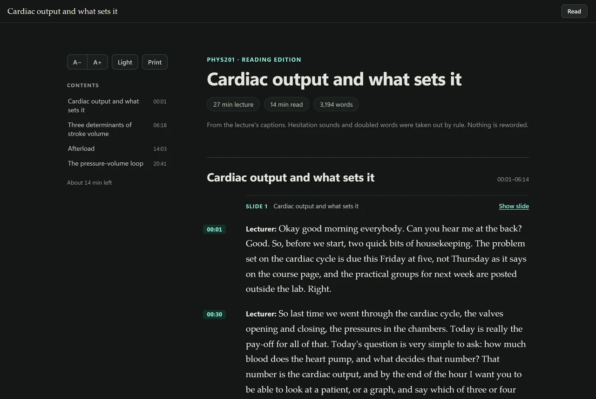
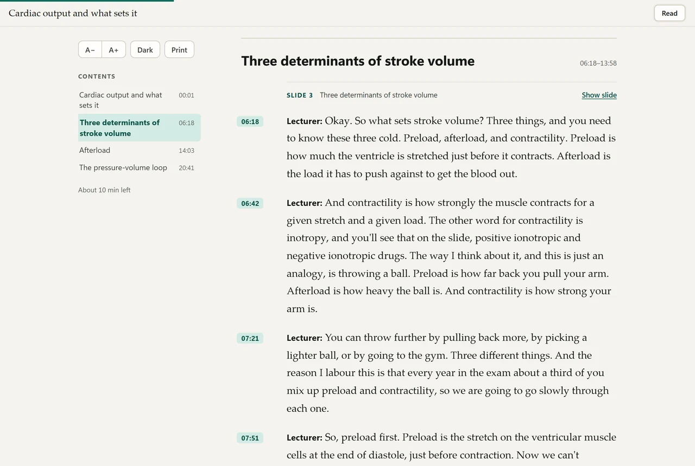
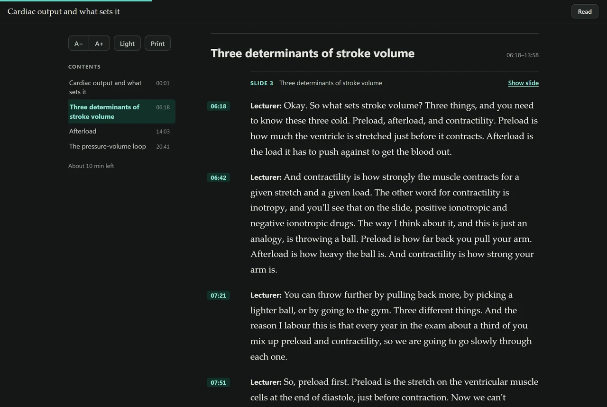

StreamSnagGuidesRead a lecture
How to read a lecture instead of watching it
At the end you have the whole lecture as a document to read, in the lecturer's own words, with a minute beside every paragraph. Pro, with no AI account.
Most people read about twice as fast as a lecturer talks. If the lecture is written down properly, with headings and paragraphs, you can get through it in about half the time and slow down only where it gets hard. A 27-minute lecture is a 14-minute read: from the two samples on this site, 27 and 28 minutes of lecture, about 3,200 words and 14 minutes of reading each.
What you end up with
StreamSnag calls it a reading edition. It is one page saved next to the video: a contents list, the lecture cut into headed parts, each part into paragraphs, and beside every paragraph the minute it was said. You can open a sample reading edition to see one.
It is not a summary. It keeps what was taught, in the lecturer's own words. Examples, asides and qualifications stay in. Nothing is reworded. Hesitation sounds and doubled words are removed by rule, and that is all. If you want the main points drawn out, that is the study guide, which is a separate step.
Three things are added without any AI, and without changing a word:
- Headings. From the slides when there are some. Without slides, a part is headed by its own most distinctive terms, such as “Wall stress”, when some stand out.
- The lecturer's emphasis. A sentence such as “If you remember one thing from today, remember that distinction” is marked, with “Lecturer's emphasis” beside it.
- Spoken lists. A “first… second… third…” is set out as a numbered list.
See the same sample made without its slides, and a statistics lecture with five spoken lists.
The steps
Save the lecture
Open the lecture page, press play, click the StreamSnag icon and press Download. The popup then says where the file went.
Get the words
If the lecture has captions, they are its words, and there is nothing to do. If the popup says “No captions here”, press Transcribe on this computer. That needs the helper program and a one-time download.
Press Read the lecture
The button is on a card headed Reading edition: “The lecture as an article you can read instead of watching. It opens as soon as it is made.” Without AI that takes a few seconds, on your own computer. The page opens in a tab of its own, and the popup says how long it is, for example “4 sections, about 14 minutes to read”.


Read
The contents are on the left with the minute each part starts, and a line under them says how much reading is left. To come back later, the popup keeps a button for the saved page.


Reading it well
- Search it. Your browser's find box works on the whole lecture at once.
- Change the text or print it. Buttons at the top change the size, switch to a dark page and print. It is laid out for paper as well as the screen.
- Take it with you. It is a single file that works offline, so it can be copied to a phone or a tablet. A Markdown copy is saved beside it.
- Go back to the lecturer. A paragraph's minute takes you to that moment. With a study page next to it, the minute opens there, with the slide that was up.
Good to know
- Most words right, not all. The page says what the captions or the transcript say, mistakes included. Speech models of this size misspell unusual drug and technical names. In our sample the captions wrote “ionotropic” for inotropic. The optional AI tidy corrects misheard terms against the slides.
- Plain headings. Without slides, a part where no term stands out is headed by number and minute, such as “Part 3 · 12:40”. That is common when the lecturer is telling a story. In our sample made without slides, two of the four parts got a heading from their terms and two did not.
- No emphasis marks or lists. Those are found in English lectures whose captions have punctuation.
- Long paragraphs with no full stops. Some automatic captions have no punctuation. Paragraphs are then cut at pauses, and no sentence ends are invented.
- Nothing to read. If the captions hold no words, it says so and makes nothing.
The optional extra: tidying with your own AI account
If you have chosen an AI account in Settings, Read the lecture asks each time: “Tidy with AI” or “Make it without AI”. Tidying takes out false starts and repairs the punctuation. It never summarises. Each part is checked against the transcript, and a part that fails is shown as transcribed. It sends the transcript to your own AI account. With no AI account you are not asked. The setting is “Reading edition: tidy with AI”: Off, Ask each time or Always.
Questions
Does it need an AI account or an internet connection?
Neither. It is made on your own computer from the transcript, by rule, and nothing is uploaded.
Is it free?
It is part of Pro, which is US$39.97 a year, US$4.99 a month, or US$99.95 once for life. This step needs no AI, so that is all it costs. The study tools that do use AI run on your own AI account, never paid to StreamSnag: nothing extra with a Claude or ChatGPT subscription you already have, or a few cents to about US$1.50 a lecture with a pay-as-you-go key.
Read tonight's lecture.
Saving is free, and Pro takes your first lecture from start to finish, free, with no card.
Get StreamSnag, free